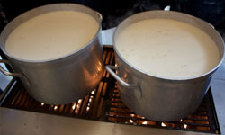

New England Chowder Recipe
Ingredients Required
- 2-1/2 cups water, divided
- 20 fresh hard-shell clams,*scrubbed and soaked
- 2 strips thick-sliced bacon
- 1 medium onion, chopped
- 4 tablespoons all-purpose flour
- 1 clove garlic, minced
- 3 medium red potatoes, peeled and diced
- 2 bay leaves
- 1 teaspoon salt
- 1/8 teaspoon black pepper
- 2 cups half-and-half
- 1 cup milk
- Oyster crackers and lemon slices for garnish
Step by Step Procedure
- Place 1 cup water in large stockpot. Bring to a boil over high heat. Add clams. Cover stockpot; reduce heat to medium. Steam 5 to 7 minutes or until clams start to open. Remove clams from stockpot as they open. Discard any clams that remain unopened.
- Remove clams from shells. Chop clams; set aside. (For shucked clams, drain and chop clams; set aside.)
- Cook bacon in large saucepan over medium-high heat until crisp. Remove bacon to paper towels, leaving drippings in pan. Crumble bacon when cool enough to handle.
- Add onion, celery, flour and garlic to bacon drippings and cook over medium heat, stirring occasionally, about 2 minutes or until vegetables are crisp-tender. Remove from heat.
- Add potatoes to onion mixture. Stir in remaining 1-1/2 cups water, bay leaves, salt and pepper. Bring to a boil over high heat. Reduce heat to medium-low; simmer, uncovered, until potatoes are tender, about 10 minutes.
- Stir in half-and-half, milk and chopped clams; heat through over medium heat, stirring occasionally. Discard bay leaves. Stir in bacon. Serve with oyster crackers, if desired.
|

Nutritional Facts
| Calories: |
85 |
| Total Fat: |
2.5g |
| Sugars: |
0g |
| Total Carbs: |
12.3g |
| Cholesterol: |
7mg |
|